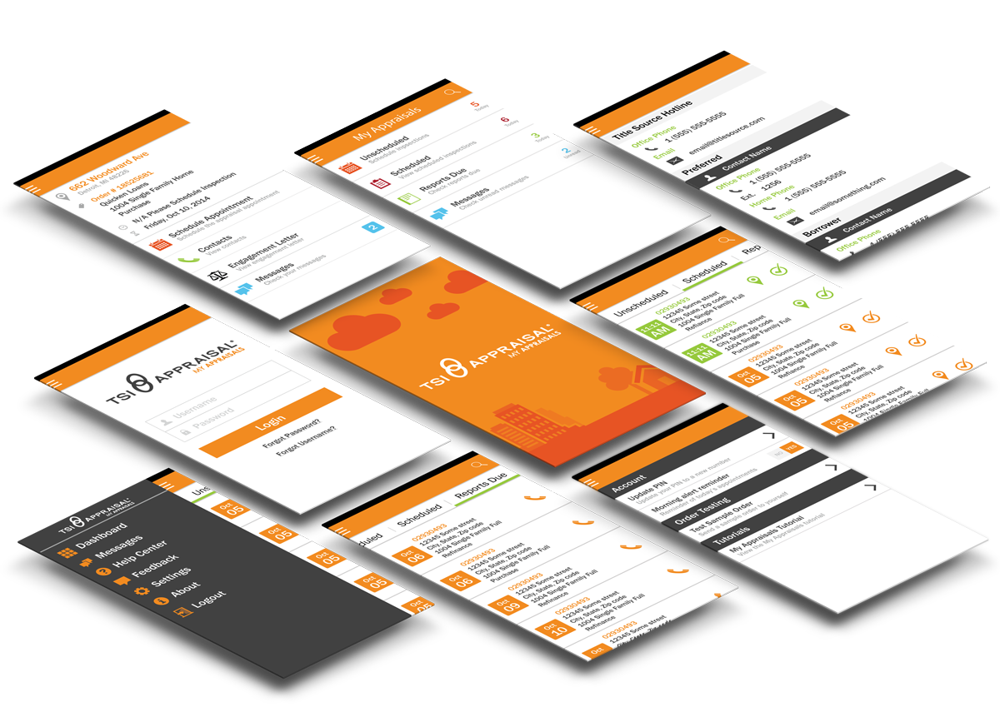

Amrock, LLC · UX Designer · 2014–2015
My Appraisals: Cutting Field Worker Order Acceptance from Hours to Minutes
01 · Overview
About My Appraisals
My Appraisals is a digital platform designed to streamline the appraisal management process for real estate transactions, combining a web portal and a companion mobile app. Our focus was to reduce the time it took for appraisers to schedule and interact with orders, and give them the ability to communicate more quickly with home offices outside of phone calls and emails.
I led the design for key features (the dashboard, scheduling tools, and order details screen), as well as implementing the web portal's front-end. I collaborated closely with stakeholders through weekly updates, and partnered with mobile developers for both Android and iOS to ensure seamless implementation and visual consistency across platforms.

02 · The Challenge
What We Were Solving For
Amrock needed to improve the efficiency of their appraisal management process in two specific ways:
Slow order scheduling
Appraisers were taking an average of a day or longer to accept or decline orders, creating a bottleneck that slowed the entire appraisal process downstream.
Inefficient communication
Communication between appraisers, scheduling teams, and auditing teams relied on phone calls and emails: slow, undocumented, and hard to track.
Older user demographic
The active user base had an average age of 55. Design had to emphasize larger touch targets, clear typography, and simplified navigation for this demographic.
Cross-platform consistency
The solution needed to work across iOS, Android, and web, maintaining a consistent experience for appraisers whether in the field or at a desk.
03 · Process
Research, Collaboration & Development
Taking a user-centered approach, I conducted interviews with appraisers and scheduling teams to gather detailed insights into their daily workflows and pain points. I also engaged in user shadowing, spending time observing appraisers and scheduling teams in their actual work environments to understand how existing tools were used in real time.
I facilitated weekly stakeholder presentations throughout the project, actively soliciting feedback and incorporating it into the design in real time. This iterative approach kept the project aligned with both user needs and business goals.
For engineering collaboration, I provided all graphic assets, defined interaction expectations, conducted quality assurance testing, and implemented the front-end design for the web portal, working through paired programming sessions with developers to mentor on HTML/CSS and ensure the design translated accurately across browsers and devices.
04 · Key Features
What We Built
Dashboard
At-a-glance view of active tasks, upcoming appointments, and messages. Designed to minimize cognitive load and give appraisers a clear starting point for their day with minimal navigation required.
Scheduled Tab
Comprehensive view of all upcoming appointments organized by date. Integrated directions, task completion functionality, and quick navigation to keep appraisers on time in the field.
Unscheduled Tab
Prominently surfaces appointments needing action with integrated communication options and quick access to scheduling tools. A few taps replaces what used to take phone calls.
Order Details
Centralized hub with all information needed to complete an order: client contacts, property info, messaging history, scheduling details, and specific instructions in one place.
05 · Outcome
Measurable Results
Project Outcomes
- Reduced order response times: The platform significantly shortened the time appraisers took to schedule and finalize appointments, from a day or longer down to minutes.
- Enhanced communication efficiency: Integrated messaging and action-driven tools minimized the need for phone calls and emails, improving responsiveness across the appraisal process.
- Increased user satisfaction: By addressing the specific pain points identified during research, the solution delivered a more streamlined workflow so appraisers could focus on their work, not communication overhead.